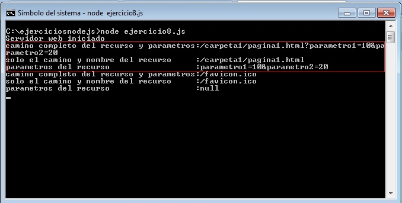
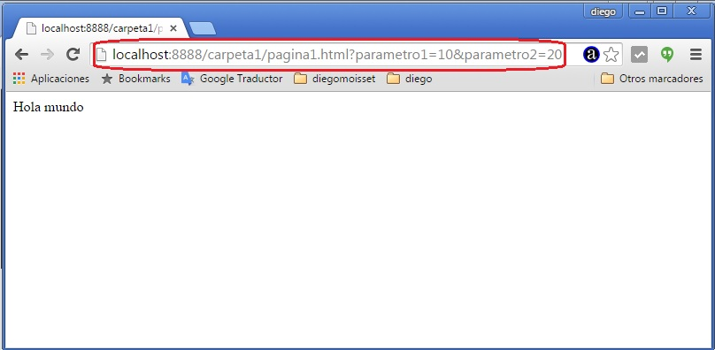

Hemos visto que en Node.js debemos crear en nuestra aplicación un servidor web y mediante una función asincrónica capturar las peticiones que envie el navegador.
Recordemos el programa del concepto anterior: ejercicio7.js
var http=require('http');
var servidor=http.createServer(function(pedido,respuesta){
respuesta.writeHead(200, {'Content-Type': 'text/html'});
respuesta.write('<!doctype html><html><head></head>'+
'<body><h1>Sitio en desarrollo</h1></body></html>');
respuesta.end();
});
servidor.listen(8888);
console.log('Servidor web iniciado');
Cada vez que sucede una petición de recurso (puede ser una página, una imagen, un archivo de sonido etc.) se ejecuta la función anónima que le pasamos a createServer.
No vimos ni hablamos nada del primer parámetro de la función: el cual lo llamamos "pedido"
Este objeto tiene muchos datos que llegan al servidor. Analizaremos la propiedad url de este objeto.
Se trata de un string con la ubicación exacta del recurso que pide el navegador al servidor, por ejemplo:
http://localhost:8888/carpeta1/pagina1.html?parametro1=10¶metro2=20
Estamos solicitando al servidor localhost el archvio pagina1.html que se encuentra en la carpeta 'carpeta1' del servidor y tiene dos parámetros.
Veamos como podemos recuperar estos datos en la función anónima que debe responder la petición.
Codifiquemos el archivo ejercicio8.js:
var http=require('http');
var url=require('url');
var servidor=http.createServer(function(pedido,respuesta){
var objetourl = url.parse(pedido.url);
console.log('camino completo del recurso y parametros:'+objetourl.path);
console.log('solo el camino y nombre del recurso :'+objetourl.pathname)
console.log('parametros del recurso :'+objetourl.query)
respuesta.writeHead(200, {'Content-Type': 'text/html'});
respuesta.write('<!doctype html><html><head></head><body>Hola mundo</body></html>');
respuesta.end();
});
servidor.listen(8888);
console.log('Servidor web iniciado');
Requerimos otro módulo llamado 'url' (este módulo nos facilita el análisis de las distintas partes de una url) además del módulo 'http' que ya conocemos:
var http=require('http');
var url=require('url');
En la función anónima llamamos al método parse del objeto 'url' y le pasamos como parámetro la propiedad url del objeto pedido que llega a la función:
var objetourl = url.parse(pedido.url);
Esta actividad lo que hace es parsear (procesar el string que contiene pedido.url) y descomponernos las distintas partes de una url en un objeto literal para facilitar analizar su contenido.
Ejecutemos este programa (ejercicio8.js) y dispongamos desde el navegador la url: http://localhost:8888/carpeta1/pagina1.html?parametro1=10¶metro2=20
Luego de solicitar la página desde el navegador (recordar que no hace falta que existe la carpeta 'carpeta1' ni el archivo 'pagina1.html) veamos que nos muestra la consola:

El objeto literal objetourl tiene tres propiedades fundamentales para recuperar los datos en forma parcial y agrupada de la petición HTTP que hizo el navegador:
console.log('camino completo del recurso y parametros:'+objetourl.path);
console.log('solo el camino y nombre del recurso :'+objetourl.pathname)
console.log('parametros del recurso :'+objetourl.query)
Con estos datos mediante if podemos redirigir el pedido al recurso respectivo (tengamos en cuenta que por el momento siempre nuestro sitio devuelve el 'Hola mundo'):

Hay otra cosa que debemos nombrar: los navegadores la primera vez que acceden a un sitio piden un recurso (el archivo favicon.ico) y es eso por lo que se ejecuta dos veces la función anónima, una para solicitar el archivo 'archivo1' y otra para solicitar el archivo 'favicon.ico' (más adelante veremos como retornar dicho archivo y otros que se soliciten)